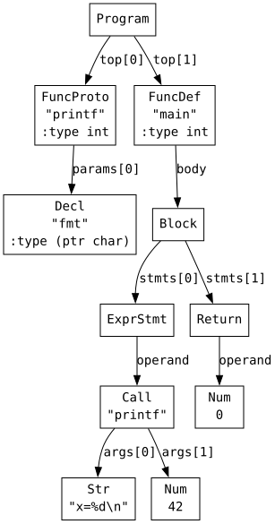
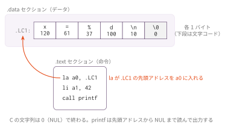
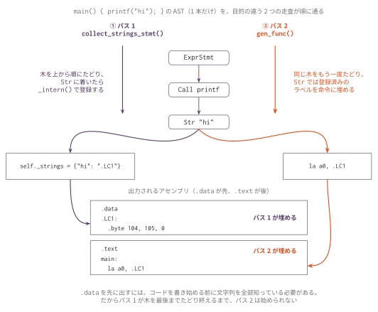

コマ10: 文字列リテラルと .data セクション
今日のゴール
文字列リテラルを .data セクションに出力し、printf 呼び出しを動かす。
コマ9までに、ポインタ、ポインタ演算、関数呼び出し、型サイズを扱えるようになった。
この回では、文字列リテラルをメモリ上に配置し、その先頭アドレスを char * として使う。
printf("x=%d\n", 42);上のコードでは、"x=%d\n" をプログラム中のデータ領域に置き、そのアドレスを第1引数として printf に渡す。
この回で扱う範囲
対象にする機能は次の通り。
| 種類 | 例 |
|---|---|
| 文字列リテラル | "hello" |
| 外部関数呼び出し | printf("hi\n") |
| 文の走査 | if / while / for の中の文字列を集める |
| 標準出力テスト | tests/foo.stdout |
この回では、printf 自体は実装しない。
コンパイル後のアセンブリを riscv64-linux-gnu-gcc -static でリンクすると、libc の printf が使われる。
式の中に埋もれた文字列（"abc"[1] や三項演算子の枝）の走査と、lib.h の残りの関数は、
次のコマ11 で扱う。
この回までの言語仕様（EBNF）
この回までに書けるプログラムの文法を、累積の形でまとめる。
記法と最終形の全体像は
language_spec.md の「形式文法（EBNF）」を参照。
この回で書ける #include は提供物の lib.h の取込みだけで、
自作ヘッダと入れ子の取込み、#define はコマ14 で扱う。
include_dir ::= '#' 'include' '"' FILENAME '"' NEWLINE /* #define はコマ14 */
stars ::= '*' { '*' }
scalar_type ::= 'int' [ stars ]
| 'char' [ stars ] /* struct はコマ11、void * はコマ12 */
obj_type ::= scalar_type /* struct Tag はコマ12 */
ret_type ::= scalar_type
| 'void'
type_name ::= obj_type
program ::= external_decl { external_decl }
external_decl ::= func_proto
| func_def /* struct 定義はコマ12、グローバル変数はコマ13 */
var_decl ::= obj_type IDENT ';'
param ::= scalar_type IDENT
param_list ::= param { ',' param }
func_proto ::= ret_type IDENT '(' [ param_list [ ',' '...' ] ] ')' ';'
func_def ::= ret_type IDENT '(' [ param_list ] ')' func_body
func_body ::= '{' { var_decl } { stmt } '}'
stmt ::= expr_stmt
| block
| if_stmt
| while_stmt
| for_stmt
| 'break' ';'
| 'continue' ';'
| 'return' [ expr ] ';'
expr_stmt ::= [ expr ] ';'
block ::= '{' { stmt } '}'
if_stmt ::= 'if' '(' expr ')' stmt [ 'else' stmt ]
while_stmt ::= 'while' '(' expr ')' stmt
for_stmt ::= 'for' '(' [ expr ] ';' [ expr ] ';' [ expr ] ')' stmt
expr ::= assign_expr
assign_expr ::= unary_expr '=' assign_expr /* 右結合 */
| cond_expr
cond_expr ::= binary_expr [ '?' expr ':' cond_expr ] /* 右結合 */
binary_expr ::= unary_expr { bin_op unary_expr }
bin_op ::= '*' | '/' | '%' /* 論理 && || はコマ13 */
| '+' | '-'
| '<' | '>' | '<=' | '>='
| '==' | '!='
unary_expr ::= postfix_expr
| '-' unary_expr
| '*' unary_expr
| '&' unary_expr
| '++' unary_expr
| '--' unary_expr
| 'sizeof' '(' type_name ')'
postfix_expr ::= primary_expr { postfix_suffix }
postfix_suffix ::= '[' expr ']' /* . と -> はコマ12 */
primary_expr ::= INT_LITERAL
| CHAR_LITERAL
| STRING_LITERAL
| IDENT '(' [ arg_list ] ')'
| IDENT
| '(' expr ')'
arg_list ::= assign_expr { ',' assign_expr }この回までの二項演算子の優先順位（高い順）:
| 優先順位 | 演算子 | 結合 |
|---|---|---|
| 1（高） | * / % |
左 |
| 2 | + - |
左 |
| 3 | < > <= >= |
左 |
| 4 | == != |
左 |
表の読み方はコマ1の「木の形は規則で決まっている」と
language_spec.md の「演算子」を参照。
この回で増えたのは、primary_expr の STRING_LITERAL と、func_proto の ... の2箇所である。
... はプロトタイプ限定で、1個以上の固定引数の後にのみ書ける（(...) 単独形は導出できない）。
字句トークンの定義はどの回でも同じであるため、ここでは繰り返さない。
STRING_LITERAL とエスケープの定義は
language_spec.md の「字句トークン」にある。
AST を確認する
まず、printf と文字列リテラルを含むプログラムがどのような AST になるか確認する。
python3 scaffold/parse_viewer.py sessions/10_strings_data_section/tests/printf_number.cこのプログラムの内容は次の通り。
int printf(char *fmt, ...);
int main() {
printf("x=%d\n", 42);
return 0;
}実行すると、次のようなS式が表示される。
(program
(funcproto "printf" :type int
(params (param "fmt" :type (ptr char))))
(funcdef "main" :type int (params)
(block
(exprstmt
(call "printf"
(args (str "x=%d\n") (num 42))))
(return (num 0)))))
新しく重要になるノードは (str "...") である。
これは ND_STR として表され、node.sval に文字列の内容が入っている。
文字列リテラルはどこに置くか
整数リテラル 42 は、命令中に即値として直接埋め込める。
しかし文字列リテラルは複数バイトのデータなので、命令列の中ではなくデータ領域に置く。
.data
.LC1:
.byte 120 # 'x'
.byte 61 # '='
.byte 37 # '%'
.byte 100 # 'd'
.byte 10 # '\n'
.byte 0 # 終端NULC の文字列は、最後に 0 が入る NUL 終端文字列である。
そのため、文字列本体のバイト列を出した後に .byte 0 を必ず出力する。
.data と .text
アセンブリでは、データと命令をセクションで分ける。
| セクション | 内容 |
|---|---|
.data |
文字列リテラルなどのデータ |
.text |
実行される命令列 |
出力の形は次のようにする。
.data
.LC1:
.byte ...
.byte 0
.text
.globl main
main:
...文字列がないプログラムでも .text は必要である。

.text 側の la a0, .LC1 が、.data に置いた文字列の先頭アドレスを a0 に入れる。
文字列ラベル
各文字列リテラルには、一意なラベルを付ける。
たとえば、"hello" に .LC1、"x=%d\n" に .LC2 のようなラベルを割り当てる。
Codegen クラスは instance 変数で文字列ラベルを管理する。
# __init__ 内
self._strings: dict[str, str] = {}
self._str_label_n = 0同じ文字列が複数回出てきた場合は、同じラベルを再利用する。
実装を単純にするため、node.sval をキーにした辞書で管理する。
def _intern(self, s: str) -> str:
if s not in self._strings:
self._str_label_n += 1
self._strings[s] = f".LC{self._str_label_n}"
return self._strings[s]出力前に文字列を集める
.data セクションは .text より先に出す。
つまり、関数本体のコード生成を始める前に、プログラム中の文字列リテラルを全部知っている必要がある。
そこで、コード生成の前に AST をもう一度たどって文字列だけを集める。
この走査が collect_strings_stmt() と collect_strings_expr() である。

パス1 が集めた self._strings が .data を、パス2 のコード生成が .text を埋める。
出力は parse → collect_strings_stmt → emit_data_section → .text → gen_func の順に進む。
集める処理は、コード生成の再帰と同じ形をしている。
文なら子の文と式へ、式なら子の式へ降りていき、ND_STR に着いたら _intern() する。
def collect_strings_stmt_If(self, node: Node) -> None:
self.collect_strings_expr(node.cond)
self.collect_strings_stmt(node.then)
if node.else_ is not None:
self.collect_strings_stmt(node.else_)実行されない枝も走査する点に注意する。
else 節が実行されなくても、そこに書かれた文字列のラベルは .data に無ければならない。
無ければ la の参照先が未定義になり、リンクに失敗する。
この回で書くのは、文のハンドラ7種（Decl / ExprStmt / Return / Block / If / While / For）と、
式のうち文字列を直接抱える3種（Str / Assign / Call）である。
スケルトンの collect_strings_expr() も、この3種だけを枝に持つ形になっている。
def collect_strings_expr(self, node: Node) -> None:
match node.kind:
case 'Str':
self.collect_strings_expr_Str(node)
case 'Num' | 'Var':
pass
case 'Assign':
self.collect_strings_expr_Assign(node)
case 'Call':
self.collect_strings_expr_Call(node)
case _:
passcase _: pass に落ちる式（二項演算・単項演算・添字・三項演算子）の下にある文字列は、
この回ではまだ拾えない。"abc"[1] のような書き方はコマ11 で扱えるようになる。
ND_STR のコード生成
文字列リテラルを式として評価すると、その文字列の先頭アドレスが得られる。
型は char * と考える。
if node.kind == ND_STR:
label = self._intern(node.sval)
self.emit(f" la a0, {label}")
returnla は疑似命令で、ラベルのアドレスをレジスタに入れる。
この結果、a0 に文字列先頭アドレスが入る。
printf 呼び出し
printf は普通の関数呼び出しと同じ ABI で呼び出せる。
printf("x=%d\n", 42);この呼び出しでは、引数は次のように渡される。
| 引数 | 内容 |
|---|---|
a0 |
"x=%d\n" の先頭アドレス |
a1 |
42 |
コマ6で作った関数呼び出しのコード生成がそのまま使える（self._gen_call() または ND_CALL ハンドラメソッド）。
新しく必要なのは、ND_STR を評価したときに文字列アドレスを a0 に入れる処理である。
#include "lib.h"
実際のプログラムでは、printf の宣言を自分で書く代わりに lib.h を include できる。
#include "lib.h"
int main() {
printf("Hello, World!\n");
return 0;
}scaffold/lib.h には次の宣言が用意されている。
int printf(char *fmt, ...);... は可変長引数を表す。
この講義の Parser は外部関数宣言に限って ... を読み飛ばす。
呼び出し側では、通常の関数呼び出しと同じように引数を左から評価すればよい。
lib.h には printf 以外にストリーム操作の宣言もあるが、それらはコマ11 で使う。
標準出力テスト
これまでのテストは、主に終了コードを .ans で確認してきた。
この回からは標準出力も確認する。
tests/printf_hello.c
tests/printf_hello.ans
tests/printf_hello.stdout.ans には終了コードを書く。
.stdout には期待する標準出力をそのまま書く。
たとえば、次のプログラムなら、
printf("Hello, World!\n");
return 0;.ans は次の通り。
0.stdout は次の通り。
Hello, World!編集するファイル
mycc.py
importlib でコマ9 の Codegen09 を継承した Codegen10 に、以下の機能を追加する（クラスの骨組みはスケルトンにあらかじめ書かれている）。
| 実装対象 | 役割 |
|---|---|
_intern(value) |
同じ文字列を重複登録せず .LCn ラベルを割り当てる |
collect_strings_stmt_* |
文の中を再帰的にたどる（Decl / ExprStmt / Return / Block / If / While / For） |
collect_strings_expr_Str(node) |
node.sval を _intern する |
collect_strings_expr_Assign(node) |
代入の左辺と右辺をたどる |
collect_strings_expr_Call(node) |
呼び出しの引数をすべてたどる |
emit_data_section() |
登録済みの文字列を .data に .byte 列として出力する |
type_of_expr_Str(node) |
文字列リテラルの型を返す |
codegen_Str(node) |
la a0, ラベル で文字列の先頭アドレスをロードする |
collect_strings_stmt() の呼び出しと emit_data_section() の呼び出し自体は main() に書かれている。
実装するのは、呼ばれる側のハンドラの中身である。
実装手順
- スケルトンの
importlib継承によりコマ9の Codegen クラスを引き継ぐ（あらかじめ書かれている） self._stringsとself._intern()を追加して文字列ラベル管理を作る- 文字列を集める走査の呼び出し自体は
main()に書かれている（各FuncDefの本体に対してcollect_strings_stmt()を呼ぶ）。実装するのは、AST を再帰的にたどって文字列を集める各ハンドラ（collect_strings_stmt_*とcollect_strings_expr_Str/collect_strings_expr_Assign/collect_strings_expr_Call）の中身である .dataセクションを出力する呼び出し（emit_data_section()）もmain()に書かれている。実装するのはemit_data_section()自体の中身で、登録済みの各文字列を.byte列として出力する処理である.textセクションの出力と関数本体の生成は、コマ9までの実装がそのまま使われる（この回で新しく書く部分はない）self._type_of_expr(node)でND_STRをchar *にするND_STRのハンドラメソッドでla a0, labelを出すprintf_hello.cとprintf_number.cの stdout テストを通す
tests/
| ファイル | 内容 | 期待値 |
|---|---|---|
printf_hello.c |
文字列だけを出力する | Hello, World! |
printf_number.c |
%d に整数を渡す |
x=42 |
str_control_flow.c |
if / else / while / for の中だけに置いた文字列を集める（文の走査） |
in if / in while×2 / in for×2 |
str_intern_dedup.c |
同じ文字列は1ラベル・違う文字列は別ラベル（_intern） |
same / other |
テスト
python3 scaffold/test_runner.py sessions/10_strings_data_sectiontests/printf_hello.c が Hello, World! を出力すれば基本形は成功。
str_ で始まる2件は途中経過を確かめる中間テストである。
走査（collect_strings_stmt_*）とラベル管理（_intern）のどこが抜けているかを
機能単位で切り分けられるので、printf_hello.c が通らないときはこちらから当たる。
個別に動かす場合は、次のようにする。
python3 sessions/10_strings_data_section/mycc.py sessions/10_strings_data_section/tests/printf_hello.c \
| riscv64-linux-gnu-gcc -x assembler -static - -o out
qemu-riscv64 ./out
echo $?標準出力を伴う回なので、echo $? の前に出力そのものも目で確認する。
注意
printf はこの回でも実装しない。
riscv64-linux-gnu-gcc -static でリンクしたとき、libc の printf が使われる。
lib.h が与えるのは宣言だけである。
文字列リテラルは .data に置く読み出し専用のデータとして扱う。
同じ内容の文字列は _intern() が1つのラベルにまとめるので、
同じ文字列を2回書いても .data には1つしか出ない。
ND_STR の値は文字列そのものではなく先頭アドレスである。型は char * になる。
文字列リテラルの中身を書き換える操作はこの回では扱わない。
.stdout を置いたテストは、終了コード（.ans）と標準出力の両方が一致して初めて通る。
末尾の改行の有無まで一致させる必要がある。
走査で拾い漏らした文字列は、コンパイルもアセンブルも通ったうえでリンクで
「未定義のラベル」として落ちる。エラーが .LCn を名指ししていたら、
その文字列がどの文の下にあるかを見て、対応する collect_strings_stmt_* を疑う。
ここまでで着手できる発展課題
printf の呼び出しと可変長引数の宣言まで学んだので、libc なしで動かす
R1 と、可変長引数の定義に意味を足す
L3 に着手できる。
生成したアセンブリで printf の呼び出しと標準出力を1命令ずつ確認したいときは、RV64 シミュレータ に貼り付ける。
この回の完成形に相当する OCaml 版参考実装が ../../workbook/ocaml/README.md にある。完成相当の実装なので、まず自分の実装方針を検討してから確認すること。